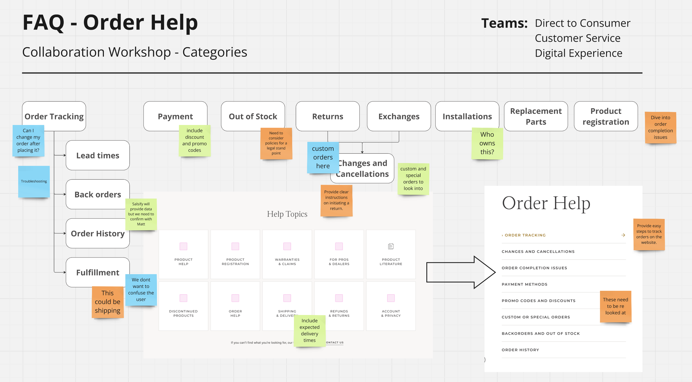
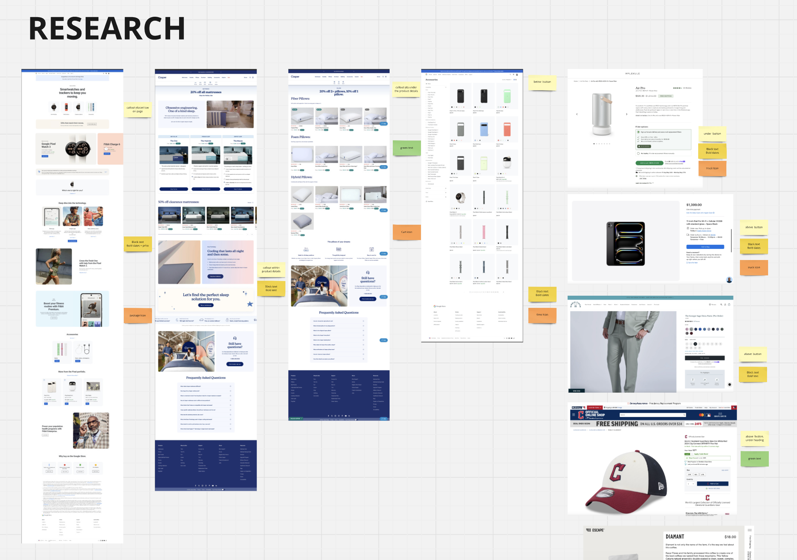

In partnership with the project lead, we redesigned a door retailers’ website, as we collaborated with stakeholders from across the business. The existing site needed a complete overhaul to better align with both user needs and business goals. Together, we are drove a content-first, user-friendly redesign to create a modern, sustainable, user experience.
The goal was to balance business objectives and stakeholder requirements, ensuring the new site serves both user needs and company goals.
There are a lot of great minds that contributed on the project. I had been assigned the role of UX Manager. My focus is was on shaping part of the strategy and processes, managing the design system, and acting as the bridge between the user and business goals. So, what exactly does that look like?
It involved briefing the design team on the foundational and core components needed to build the Figma design system. Ensuring accessibility is added at a foundational level. Then working closely with the lead developer to ensure theming direction is clear for the digital design system housed in Storybook.
Engaging in stakeholder interviews and workshops to understand their needs and extract customer needs for the site.
Analyzing quantitative data to construct an initial site map. Creating mini page wireframes and flows as a visual aid for the stakeholders.
Writing detailed design and component briefs, often accompanied by wireframes. I worked closely with the designers through the development process, providing constructive feedback to ensure that the user experience and behaviors were at the forefront of every design decision.
Brief + Wireframe → Hand-off to Designer → Design Creates Initial Design → Collaborative Development & Iteration with Feedback → Final Design Delivered
At times, I took on the UI design work, addressing key business goals and finding solutions. For instance, one of the business needs was to promote our door series in a way that mirrors the experience customers would have in-store. I worked on creating a design approach that aligns the digital experience with the physical experience in store.
My work involved content strategy and designing high-fidelity page prototypes in Figma, presenting them to the team for feedback and refining the designs based on collaborative input.
This project involves numerous teams, including Data, Commercialization, Direct to Consumer, Channel Marketing, and many others. I was able to gain a wicked amount of first-hand UX/UI experience.
I’ve had the opportunity to push the boundaries of my role, often blurring the lines between design strategy and execution, while adapting to meet the changing needs of the business. I’ve learned how to navigate complex workflows, not to mention spent hours problem-solving, and having fun collaborating with a great bunch of people.
I’m really looking forward to seeing the website go live and seeing the value and growth come from the teams hard work.